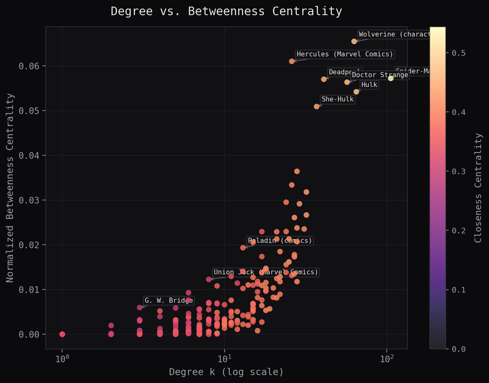

Last week, we established that Marvel is far more clustered and heavy-tailed than any matched Erdős–Rényi graph. But looking at raw edge counts only tells part of the story. A character can have a modest degree yet sit squarely on the shortest path between entire factions.
01Degree vs. Betweenness: Popularity vs. Control
Degree centrality measures immediate visibility \(C_D(v) = \frac{deg(v)}{N-1}\), whereas Betweenness Centrality \(C_B(v) = \sum_{s \neq v \neq t} \frac{\sigma_{st}(v)}{\sigma_{st}}\) calculates the fraction of all shortest paths passing through node \(v\).
When we plot raw degree against betweenness centrality, clear archetype clusters emerge: high-degree volume hubs (e.g., Wolverine, Spider-Man) versus critical "broker" nodes that link distinct sub-universes (e.g., Doctor Strange bridging mystic realms to street-level heroes).

The surprise of the graph is Hercules, who despite a modest degree and closeness, ranks second in betweenness.
02Closeness Centrality & Eigenvector Influence
Closeness Centrality \(C_C(v) = \frac{N-1}{\sum_{u \neq v} d(v, u)}\) measures how few hops a node is from every other character in the giant component. Meanwhile, Eigenvector Centrality assigns high weight to nodes connected to other well-connected nodes.
| Rank | Character | Degree \(k\) | Betweenness \(C_B\) | Closeness \(C_C\) | Eigenvector \(x_v\) |
|---|
Key Observation — Betweenness vs Eigenvector
Most of the characters in the top ranks were more or less expected. Hercules however is an interesting surprise. This surprise is intuitively explained by the eigenvector. The more expected characters have a high eigenvector, showing their overall popularity. Hercules however has quite low, therefore acting as a broker while relatively unimportant.
03Interactive Lab: Centrality Profiles & Roles
Select a character below to examine their multi-dimensional centrality profile and observe their local network position, role archetype, and clique affiliations.
—
—
—
04Maximal Cliques & Cohesive Subgroups
A clique is a fully connected subgraph where every single node shares an edge with every other node. Using the Bron–Kerbosch algorithm, we identified all maximal cliques across the Marvel network.
The largest cliques center on the core X-Men roster. Apart from being very connected to each other, the X-Men feature other prominent characters as well, such as Spider-Man and Hercules.
05Summary & Key Findings
Measuring multiple dimensions of centrality reveals that "importance" in a social graph is contextual:
- Wolverine and Hercules are the supreme brokers, routing paths across the widest variety of distinct story arcs.
- Spider-Man follows closely behind, although his webs are not as strong in this context.
- X-Men are strongly connected to each other, forming multiple cliques.